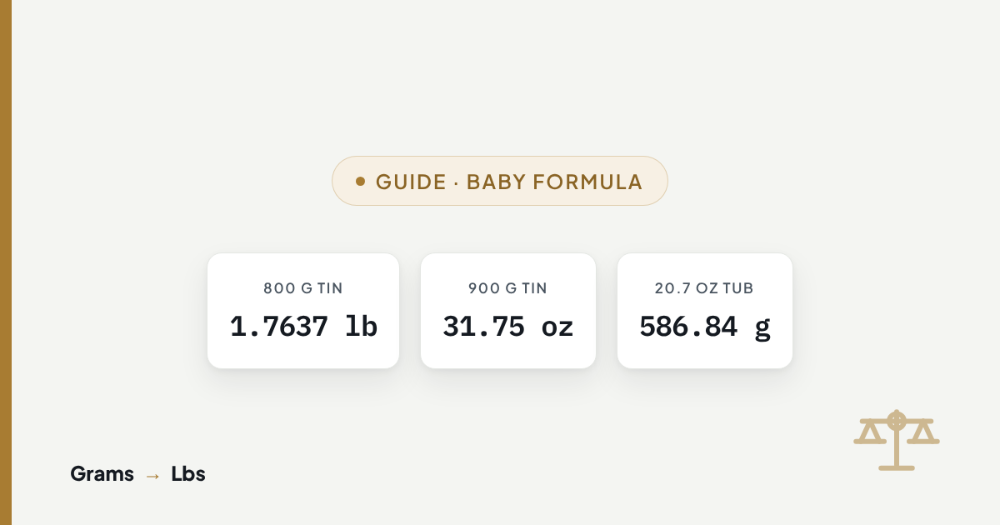

Baby Formula Tub Sizes: Grams to Pounds Compared
A 20.7 oz US tub and an 800 g international tin are both common formula sizes that look nothing alike until they are converted to the same unit. This converts every common container size both ways, for comparing size and price only.

Baby formula containers are sized in grams almost everywhere outside the US and in ounces inside it, so an 800 gram European tin and a 20.7 ounce US tub cannot be compared by their printed numbers alone. Divide grams by 453.59237 to get pounds, or multiply ounces by 28.349523125 to get grams — the charts below apply that to the container sizes actually sold, covering net product weight and price only, not feeding amounts or scoop sizes.
The quick answer
An 800 gram infant formula tin is 1.7637 pounds, and a 20.7 ounce US formula tub is 586.84 grams — both figures come from the fixed relationship between the units (1 pound equals exactly 453.59237 grams, 1 ounce equals exactly 28.349523125 grams), not an approximation. These three container sizes cover most of what shows up on a formula aisle shelf or an import listing:
US tub sizes converted to grams and kilograms
US infant formula tubs are labeled by net weight in ounces, most commonly in the 20 to 24 ounce range for a standard tub and up to 36 to 48 ounces for value and club-store sizes. Converting each to grams and kilograms makes it possible to line a US tub up against an international tin labeled the other way:
| Tub size (oz) | Grams (g) | Kilograms (kg) |
|---|---|---|
| 20.1 oz | 569.83 g | 0.5698 kg |
| 20.6 oz | 584.00 g | 0.5840 kg |
| 20.7 oz | 586.84 g | 0.5868 kg |
| 22.5 oz | 637.86 g | 0.6379 kg |
| 23.2 oz | 657.71 g | 0.6577 kg |
| 27.4 oz | 776.78 g | 0.7768 kg |
| 30.2 oz | 856.16 g | 0.8562 kg |
| 30.8 oz | 873.17 g | 0.8732 kg |
| 36.6 oz | 1,037.59 g | 1.0376 kg |
| 40 oz | 1,133.98 g | 1.1340 kg |
| 48 oz | 1,360.78 g | 1.3608 kg |
The gap between a 20.1 ounce tub and a 48 ounce club-store tub is not small: at 1,360.78 grams, the 48 ounce tub holds more than double the powder of the 20.1 ounce tub at 569.83 grams, even though "48" does not look like "more than double 20" at a glance. Reading the gram figure makes the actual size difference concrete instead of relying on the ounce number alone.
International tin sizes converted to pounds
International infant formula tins, common across the UK, Ireland, the EU and Australia, are labeled in grams, most often 400 g, 600 g, 800 g or 900 g. None of these line up exactly with a whole-pound or whole-ounce US size, which is why a straight label-to-label comparison is misleading:
| Tin size (g) | Ounces (oz) | Decimal pounds | Pounds & ounces |
|---|---|---|---|
| 400 g | 14.11 oz | 0.8818 lb | 0 lb 14.11 oz |
| 600 g | 21.16 oz | 1.3228 lb | 1 lb 5.16 oz |
| 800 g | 28.22 oz | 1.7637 lb | 1 lb 12.22 oz |
| 900 g | 31.75 oz | 1.9842 lb | 1 lb 15.75 oz |
800 g is the single most common tin size across the UK and Ireland, used by multiple major brands' standard first-infant tins. 900 g shows up more often in Australia, on some brands' larger tins, where it sits close to — but is not the same as — a 2 pound US size (907.18 g); the difference is 7.18 grams, small enough to ignore for most buying decisions but large enough that the two figures are not interchangeable on a spec sheet or an import declaration.
Comparing price per pound when a tub is priced in ounces and a tin in grams
The only fair way to compare an ounce-priced US tub against a gram-priced international tin is price per pound (or per 100 grams), not price per container. A 586.84 gram tub and an 800 gram tin are not simply "about the same size," they are two specific weights, and converting both to the same unit before comparing price is what actually shows which is the better value:
Tub A: 20.7 oz (586.84 g) at $27.49 → 1.2938 lb → $21.25 per pound
Tin B: 800 g at $24.99 → 1.7637 lb → $14.17 per pound
Same comparison per 100 g: Tub A $4.68, Tin B $3.12
Tin B: 800 g at $24.99 → 1.7637 lb → $14.17 per pound
Same comparison per 100 g: Tub A $4.68, Tin B $3.12
In this example, Tin B works out to roughly a third cheaper per pound than Tub A, a difference that is invisible if the two listings are only compared by sticker price or by container count. The figures above are an illustration of the method, not a current price quote — apply the same two steps (convert both net weights to the same unit, then divide each price by that weight) to whatever prices and sizes are actually in front of you.
Converting a formula container size yourself
To convert any container weight not already in the charts above, multiply ounces by 28.349523125 to get grams, or divide grams by 453.59237 to get pounds. Here is 1,200 grams, a larger tin size between the rows shown above:
1,200 ÷ 453.59237 = 2.6455 lb
whole pounds → 2 lb
0.6455 × 16 = 10.33 oz
result → 2 lb 10.33 oz
whole pounds → 2 lb
0.6455 × 16 = 10.33 oz
result → 2 lb 10.33 oz
The converter does this calculation instantly for any gram or ounce figure, with a choice of 2, 4 or 6 decimal places, which is useful when a product listing or a customs form gives a container weight that does not match a round chart value.
Why US and international formula labels use different units
US infant formula is labeled in ounces because the US uses the avoirdupois ounce and pound as its standard retail weight units, while most other countries label in grams or kilograms under their own metric packaging regulations. Neither system is more accurate than the other — one ounce is defined as exactly 28.349523125 grams and one pound as exactly 453.59237 grams, so converting between them is a fixed, exact calculation rather than an approximation, and the mismatch is purely about which unit a given market's packaging rules require.
Container sizes within a single brand can also differ slightly between the markets it sells in, even for what looks like "the same" product line, because each market's standard retail sizes are set independently rather than translated from one unit to the other. Whatever the net weight on a specific tin or tub reads, in grams or in ounces, 28.349523125 and 453.59237 are the fixed numbers that move that figure from one unit to the other.
When a brand's own label rounds the figure
Some brands print a rounded cross-unit figure on the package itself, and that rounded figure can differ slightly from the precise conversion. One widely sold 900 gram international tin is listed by its own manufacturer with a companion figure of "32 oz" on its packaging and product pages — a convenient round number, but the precise conversion of 900 grams is 31.75 ounces, about a quarter of an ounce less than the rounded figure printed alongside it.
That quarter-ounce gap will not change a buying decision, but it matters when a precise figure is needed — for a customs declaration, a shipping weight estimate, or simply checking a retailer's own numbers against each other. The gram figure printed on the tin is the primary, exact net weight; a rounded ounce or pound figure alongside it is a convenience, not a more precise number.
Frequently asked questions
How many grams is a 20.7 ounce tub of baby formula?
A 20.7 ounce tub of baby formula is 586.84 grams, or 0.5868 kilograms, from multiplying 20.7 by 28.349523125, the exact number of grams in one ounce. This is the tub’s net container weight, the figure printed on US packaging.
How many pounds is an 800 gram tin of baby formula?
An 800 gram tin of baby formula is 1.7637 pounds, or 1 pound 12.22 ounces written as pounds and ounces. This comes from dividing 800 by 453.59237, the fixed number of grams in one pound, and applies to any 800 gram container regardless of brand.
Does a 900 gram formula tin equal 2 pounds?
No. A 900 gram tin is 1.9842 pounds (31.75 ounces), while 2 pounds is 907.18 grams — a difference of 7.18 grams. The two are close enough to look interchangeable on a shelf, but they are not the same weight on a spec sheet or an import form.
Why is one brand’s 900 gram tin labeled 32 ounces when the exact conversion is 31.75 ounces?
That brand rounds its own cross-unit figure for a cleaner number on the package. The precise conversion of 900 grams is 31.75 ounces (900 divided by 28.349523125); 32 ounces would actually be 907.18 grams. The gram figure is the primary net weight, and the ounce figure next to it is a rounded convenience.
Why do US formula tubs use ounces while international tins use grams?
It depends on which market the container is packaged for. US retail packaging is weighed and labeled in ounces and pounds, the country’s standard units for retail goods, while most other countries label in grams or kilograms under their own metric packaging rules. Neither unit is more precise; the conversion between them is a fixed, exact calculation either way.
How do I compare price between a formula tub priced in ounces and a tin priced in grams?
Convert both containers’ net weight to the same unit first, then divide each price by that weight. For example, a 20.7 ounce tub (586.84 g) at $27.49 works out to $21.25 per pound, while an 800 gram tin (1.7637 lb) at $24.99 works out to $14.17 per pound — a difference only visible once both are converted to the same unit.
Sources
- International Yard and Pound Agreement, 1959 — defines the international avoirdupois pound as exactly 453.59237 g and the avoirdupois ounce as exactly 28.349523125 g
- NIST Special Publication 811, Guide for the Use of the International System of Units (SI) — exact conversion factors between metric and customary units